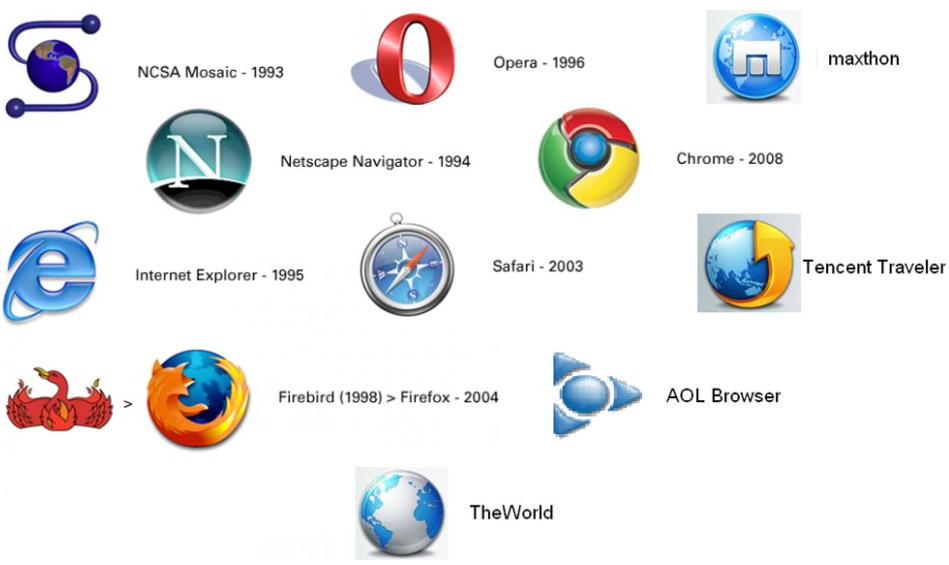

Browser History

Image Source: Internet
Learning browser history can help you understand why there are so many browsers today and why features changed at certain points in time. Initial browsers were basic text-based because websites were made to be read, not viewed. Graphical browsers came later with the addition of pictures and better compliance with web standards. As more people used the internet in the 1990s, browsers became a business competition. This produced faster innovations but led to clashes over ownership and compatibility. [4]
Browsers have transformed from tools used by scientists into essential platforms used by billions of people. Understanding browser history can help users understand why browsers have to balance so many factors at once: being open, having business objectives, running quickly, and keeping users safe.
Of course, there was a significant shift in browser history when browsers became graphical. Before there was Firefox, Chrome, and Edge, people used browser software called Mosaic. Mosaic was one of the first graphical web browsers developed for the early World Wide Web and played a key role in making the internet accessible to the general public. With Mosaic, images loaded in line with text as opposed to users having to click on images separately. [5] What seems simple today significantly changed how the web was perceived. Content became more accessible to a broader audience, and increased interest in browsing led to greater interest in creating websites. This shift pushed the web into a new era of growth.